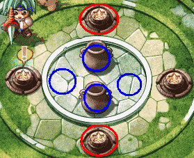

| 概要 | 情報 | アイテム一覧 |
| 敵キャラ一覧 | ステージ一覧 | 夢幻迷宮について |
| 攻略チャート | Zwei!! 攻略へ |
| ステージ選択へ |
パーヴェル庭園 Lv.1
| A | A地点にあるツボを破壊すると爆弾が出てきますので、注意しましょう。 |
| B | B地点の風船を破壊すると、敵が現れます。 その敵を倒すことで、Bより奥へ移動できます。 |
| C |
C地点には三つのスイッチがあります。 左へ行くには、1と3を、 右へ行くには、2と3をON(緑)にしてください。 |
| D | D地点の上の部屋には宝箱があります。しかし、D地点にいるモンスターを倒さないと、扉は開きません。 |
E |
E地点にはボタンスイッチがあります。このスイッチをONにすると、モンスターが数匹でてきます。 出てきたモンスターを全て倒すと、E'地点左の扉が開きます。 |
| F  |
F地点には4つのボタンスイッチと、2つのツボがあります。 これはスイッチの押し方のヒントで、赤いまるで囲んだスイッチをONにしろという意味です。 |
|
| G | G地点にも4つのボタンスイッチと2つのツボがあります。 Ｆ地点とやりかたは同じです。ただし、扉が開くと同時にトゲが落ちてくるので注意しましょう。 |
| ステージ選択へ |
| 概要 | 情報 | アイテム一覧 |
| 敵キャラ一覧 | ステージ一覧 | 夢幻迷宮について |
| 攻略チャート | Zwei!! 攻略へ |
Zwei!!
| 目次へ戻る | ページの上部へ |